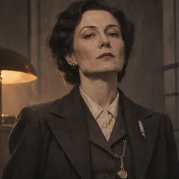
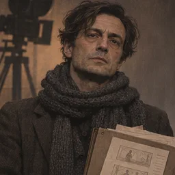
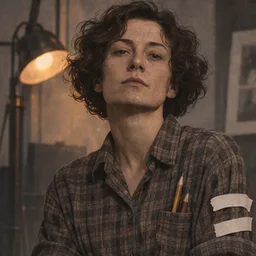
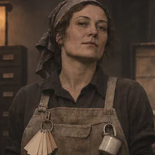
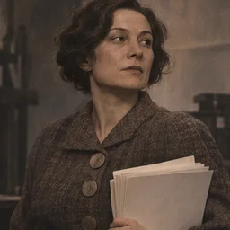
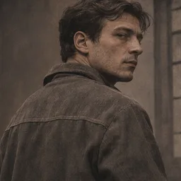
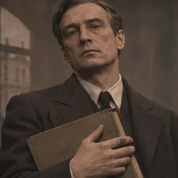

На студии «Кромка» погиб каскадёр Лев Ратин. Камера видела падение, десятки людей слышали команду «Мотор», однако каждый цех помнит другой порядок дня. Артель приглашает независимую группу установить, что произошло, пока официальный рассказ о несчастном случае не превратился в единственную доступную версию.

Если партия изменила план
Перед чтением вступления сверьте место героев, присутствующих людей и предметы с итогом прошлого вечера. Если условия встречи отпали, сыграйте последствия там, где находится партия. Событие по расписанию может произойти за кадром. Герои узнают о нём от тех, кто был на месте.
Вечер 5. Если владельцы не дают показывать негатив публике
Уточните, кому разрешена частная сверка журнала, а кто видел лишь реквизит. Дайте игрокам решить, насколько узким будет итоговое заявление. Если оснований назвать убийцу нет, исправление ложной записи всё ещё меняет исход для смены.
Группа отказалась от задания
Расследовать гибель по заказу отдела не будем. Имена работников заказчику не отдаём. Возьмём на хранение только согласованные копии. Выдаём артели расписку только за переданные копии. Артель сохраняет доступ к материалу, отдел не получает список. Уголовный вывод пока открыт.
Игроки раскрыли тайну раньше
Проверим непрерывность плёнки и время коммутатора до общего просмотра. Запросим цепь выдачи ключей. Доступные свидетельства — Непрерывный седьмой негатив, Три отметки коммутатора. Негатив показывает удар Веры. Врача вызвали ещё до дубля, а позже передали сообщение о смерти. Порядок можно проверить независимо. Сверяем время вызова врача с непрерывным отрезком негатива. Получаем независимо проверяемое окно доступа. Отделу показываем след действий, сохраняя не относящиеся к делу имена под защитой.
Партия уступила поле
Тележка перекрыла служебный выход; оригинал сегодня не вынести. Просим хранителя расписаться за оригинал. Оставляем хранителя у оригинала и выдаём расписку за проверенную копию. Публичный показ возможен только с согласия хранителя.
За десять минут до первой игры
- Откройте первый вечер, прочитайте правду мира и участников. Остальные вечера — планы, их исход решают игроки.
- Выберите пакет под фактическое число игроков. Первые три героя — готовое ядро; остальные добавляются по порядку. Возраст игрока не определяет героя.
- Согласуйте темы, длительность и сигнал паузы. Передайте игрокам только players.html; раздатки выдавайте по отдельности после указанного открытия.
- Откройте Мастерскую проекта, создайте личный черновик и импортируйте выбранный JSON через загрузку пакета. Проверьте состав и начало в предпросмотре. Запуск кампании подтверждает ведущий штатным действием.
- Откройте иллюстрацию завязки отдельно. Портреты героев входят в файл для игроков, портреты встречных — в книгу ведущего. Тактические схемы доступны в разделе карт.
Формат и темы
8 вечеров; 3 часа: 15 минут открытия и пересказа, три сцены по 45 минут, 15 минут перерыва после второй сцены и 15 минут закрытия.
Вымышленный город Гранов живёт трамвайными сменами, телефонными коммутаторами и чёрно-белым кино. Студия занимает бывшую фабрику; здесь декорация улицы дороже настоящей квартиры. Классы воина, плута, жреца и волшебника — только механическая абстракция профессий. Сверхъестественные эффекты выключены по умолчанию; изменение этой договорённости требует явного согласия стола. Ни одна сцена не требует заклинания. Огнестрельное оружие, медицина и право не симулируются; проверки обозначают игровые решения, а не профессиональные инструкции.
Дождь на жестяных крышах, усталые люди, острые разговоры и осторожная солидарность. Раскрытие преступления даёт возможность действовать, но не обязывает свидетеля быть бесстрашным.
- Чужая профессия как средство давления
- Разница между убийством, сокрытием и испуганным молчанием
- Надёжность изображения и границы человеческой памяти
- Цена исправления собственной подписи
- Солидарность без требования героизма
Границы
- Аудитория 18+; все герои, НИП и упоминаемые работники старше 21 года.
- Без сексуальных сцен, сексуального насилия, натуралистичных травм и пыток. Смерть описывается через отсутствие, документы и последствия.
- До игры согласовать темы утраты работы, долгового давления, гибели коллеги и публичного обвинения. Любую из них можно ослабить или убрать с переносом важной информации в нейтральный документ.
- Стоп-слово и жест паузы действуют без объяснения. После паузы перемотать сцену, изменить формулировку или перейти за кадр; наказания за это нет.
- Личные признания игроков, биография и пережитая утрата никогда не становятся условием участия. Можно отвечать от третьего лица или письменно.
- Не воспроизводить реальный опасный трюк. Финальная реконструкция использует карточки, пустые места и безопасное освещение; встречное насилие не требуется.
Люди за столом
- На старте выбрать любых доступных героев; первые трое образуют достаточную основу: работа с людьми, материальными следами и документами. Отсутствующий специалист не закрывает действие: другой герой использует обычное наблюдение или приглашает НИП без передачи ему решения.
- В каждой сцене менять первого говорящего. Каждый получает короткий круг: действие, письменный выбор либо пас. Роль хранителя хронологии передавать после сцены; это запись уже добытых фактов, а не особая власть над выводами.
- При разделении группы дать каждой ветке один вопрос и два последовательных обмена с ведущим. Затем вернуться за общий стол у доски расписания; проверку каждой ветки разрешать целиком, не заставляя остальных ждать отдельного броска каждого участника.
- На доске иметь три колонки: наблюдение, чужое утверждение, вывод группы. Часы с погрешностью отмечать диапазоном; печатный бланк не становится истиной только из-за печати. Улики выдаются за названное осмысленное действие, бросок меняет цену или скорость.
- При отсутствии игрока его герой занимается добровольно выбранной фоновой задачей и не даёт новых согласий от его имени. Существенную улику передать через найденный материал или доступного НИП; пропущенный личный выбор дождётся возвращения.
- Для 6–8 игроков вести параллельные пары по изображению, предметам и людям; восьмой участник может наблюдать за безопасностью свидетелей. Каждой паре дать собственное решение с ценой и собирать результаты в конце сцены. Один удачный бросок не отменяет вклада остальных.
- Раннее верное обвинение сохранять. Следующие вечера посвятить проверке версии, отделению пособничества от убийства и защите людей, а не прятать уже найденное решение. Если группа выбирает ранний финал, оставшиеся встречи могут стать последствиями и эпилогами без нового тайного убийцы.
Масштабирование группы
3 игроков
Три основных героя делят интервью, предметы и бумаги. В каждой сцене одна общая площадка; НИП помогает доставить копии, но не делает выводы. В столкновении два противника по 12 хитов.
4 игроков
Четвёртый участник ведёт одну выбранную линию свидетеля или непрерывности кадра; пары возвращаются после двух обменов. Базовое столкновение: три противника по 14 хитов.
5 игроков
Две пары работают с разными источниками, пятый меняет роль координатора после каждой сцены и получает собственный вопрос о цене доступа. Три противника по 16 хитов.
6 игроков
Три пары получают изображение, материальную цепочку и первичные записи; после двух обменов каждый докладывает один факт и одну неопределённость. Четыре противника по 18 хитов.
7 игроков
Три пары и сменяемый представитель свидетелей. Представитель выбирает условия выступления вместе со свидетелем и не решает за него. Пять противников по 20 хитов.
8 игроков
Четыре пары: три доказательные ветки и защита доступа/свидетелей. На закрытой площадке каждая пара представляет свою проверку и отвечает на одно возражение. Шесть противников по 22 хита; мирные пути сохраняются.
Первое чтение вслух
Гранов просыпается под низким серым небом. Ночной дождь ушёл к реке, но с жестяных крыш ещё капает, и трамвай третьего маршрута, проезжая мимо бывшей фабрики жестяной посуды, звенит дольше обычного: так вагоновожатые здороваются со студией «Кромка». Над воротами до сих пор видны выпуклые буквы старого фабричного названия, а под ними висит новая вывеска киностудии. Здесь снимают чёрно-белые картины для маленьких залов на углах, и в городе говорят, что декорация улицы стоит дороже настоящей квартиры, а каждый второй горожанин хоть раз стоял в массовке. Комната артели работников экрана — бывший учебный класс на втором этаже дома напротив проходной. Две парты сдвинуты в один стол, в чугунной печи потрескивают обрезки реек, на доске мелом выведены имена дежурных. Пахнет мокрой шерстью, остывшим чаем и типографской краской: на подоконнике сохнет пачка листовок о кассе взаимопомощи. На столе стоят девять чашек, хотя приглашённых меньше. Одну поставили возле пустого стула. Студия сообщила, что на седьмом павильоне, на последнем дубле картины «Последняя остановка», погиб каскадёр Лев Ратин. В артели его помнят по рабочей куртке с широким швом на спине и по привычке останавливать съёмку, когда бригада валится с ног. За окном грузовик студии медленно везёт картонную луну, прикрытую брезентом; из-под края брезента блестит серебряная краска. Марина Дол, секретарь артели, кладёт на стол лист съёмочного расписания и придерживает его ладонью, словно его может унести сквозняком. «Они говорят, все видели одно и то же. Помогите понять, что именно видел каждый. Я не прошу назвать виноватого к вечеру — я прошу восстановить порядок дня». На нижнем поле листа карандашом написано: «Не подписывать от моего имени». Марина ждёт, кто первым возьмёт лист в руки.
Правда мира · только ведущему
- Убийца неизменен: начальница договорного отдела Вера Корс, 49 лет. Лев собирался передать артели доказательства подмены условий продления обязательств. Вера удерживала работников угрозой взысканий и закрытых рекомендаций; раскрытие лишало её власти и показывало её личное участие в подлогах. Это не страховая афера.
- В 16:11 Вера и Лев вошли в коридор макетов. В 16:12 Вера намеренно нанесла ему смертельный удар тяжёлой сценической скобой. Подробности травмы не описываются. Она не планировала несчастный случай при трюке: представление о гибели на дубле возникло после убийства.
- В 16:17 врач Елена установила смерть в коридоре и сделала первичную запись. Вера вызвала её сама. Елена не видела удар и не знает убийцу. Коридор имел одну доступную дверь; запасной люк оставался под целой контрольной лентой. Оба ключа прослеживаются в журнале охраны.
- После ухода врача режиссёр Антон, помощница по непрерывности Дина и реквизитор Раиса согласились скрыть раннюю смерть, опасаясь остановки картины и долгов цехов. Они не присутствовали при убийстве. Вера назвала случившееся обмороком с падением; Антон распорядился снять финальный трюк с манекеном и изменить служебную последовательность. Их участие в сокрытии не делает их убийцами.
- В 16:20 рабочие сняли старый порог по заранее выданной заявке смены декорации. В 16:24 Раиса выдала манекен. В 16:40 камера сняла падение манекена; тело Льва уже находилось за ширмой внизу. В 16:44 Антон сообщил о гибели каскадёра при дубле. Неосведомлённые работники искренне соединили увиденный силуэт и последующую тревогу.
- Седьмой тестовый негатив случайно снял открытый участок коридора: лица вошедших, намеренный удар и выход Веры. Его исходная непрерывная последовательность, материальные следы до смены порога и независимые первичные бумаги образуют три пути к раннему убийству. Никакая обязательная исповедь не нужна. Время отдельных часов допускает минутную погрешность, порядок событий подтверждается независимо.
- Договоры дают студии экономические рычаги, но не магическую и не абсолютную юридическую власть. Свидетель может отказаться от публичного выступления, передать документ через представителя или сменить место работы. Будущая месть, оправдание или спасение не являются установленными фактами; их последствия зависят от решений группы и подтверждённой реакции НИП.
Досье дела · только ведущему
Каким событием на самом деле была гибель Льва Ратина, если видимый последний дубль её не показывает; кто нанёс ранний смертельный удар и кто отдельно создал позднюю версию несчастного случая?
Виновник: Вера Корс.
Лев обнаружил подмену продлений обязательств и требовал вернуть подписанные условия. Вера сохраняла власть над сменами, выплатами и рекомендациями через эти документы; разоблачение показывало её личное участие в подлогах. Убийство совершено ради сохранения этого контроля, не ради страховки, произведения искусства или политического результата.
В закрытом коридоре во время спора Вера намеренно нанесла Льву смертельный удар сценической скобой. После вызова врача возник отдельный план позднего сокрытия: манекен в финальном дубле и перенесённая запись тревоги. Подробности травмы и техника причинения вреда не разыгрываются; опасный трюк никогда не повторяется.
Что произошло до начала игры
- Утро съёмочного дня. Лев передал Марине личный экземпляр продления и разрешил сравнение с выпиской. Это прошлый факт, а не сообщение о его будущих намерениях после смерти. Свидетели: Лев Ратин, Марина Дол.
- 14:00. По обычному производственному плану зарегистрирована замена стены и порога на 16:20. Это не приготовление к убийству; ранняя заявка сохранена. Свидетели: Раиса Вет, Григорий Таль.
- 16:05. Григорий выдал Вере первый ключ коридора; второй остался в опечатанном ящике. Запасной люк был закрыт контрольной лентой. Свидетели: Григорий Таль, Вера Корс.
- 16:10–16:18. Антон и Павел находились на непрерывной световой репетиции в павильоне; отдельный учебный ролик сохраняет их присутствие. Они не видели происходившее в коридоре. Свидетели: Антон Лис, Павел Устен.
- 16:11. Вера и Лев вошли в коридор для разговора о подменённых условиях. Другой участник встречи не предусмотрен истиной дела. Свидетели: Вера Корс, Лев Ратин.
- 16:12. Вера намеренно ударила Льва в коридоре. Незакрытое окно попало в правый край технического теста камеры; оператор в этот момент не следил за действием в окне. При столкновении откололся край её ручной пломбы. Свидетели: Вера Корс, Лев Ратин.
- 16:14–16:16. Илья закрыл тестовый ролик и передал банку в приёмную. Лаборатория сохранила исходный негатив и обычный контрольный позитив; содержимое края кадра тогда не исследовали. Свидетели: Илья Яр.
- 16:15. Вера запросила через Лидию врача к коридору. Телефонистка знала только содержание поступившего запроса. Свидетели: Вера Корс, Лидия Крут.
- 16:17–16:18. Елена установила смерть и записала место и время осмотра. Вера передала через коммутатор сообщение о смерти до позднего дубля. Елена не видела удара; её запись не называет убийцу. Свидетели: Елена Бор, Вера Корс, Лидия Крут.
- 16:19–16:20. Вера вернула ключ. По ранней заявке рабочие сняли старый порог и передали его Раисе во двор; зарегистрированные следы относятся к уже снятой детали. Свидетели: Вера Корс, Григорий Таль, Раиса Вет.
- 16:21–16:24. Антон увидел умершего Льва, выслушал ложное объяснение Веры о внезапном падении и предложил позднюю подмену. Дина и Раиса согласились участвовать; Раиса выдала манекен по отдельной накладной. Эти трое не присутствовали при раннем ударе. Свидетели: Вера Корс, Антон Лис, Дина Рез, Раиса Вет.
- 16:40–16:44. Снят манекен, тело Льва уже находилось за ширмой внизу. Павел принял общий сигнал аппаратной за личный ответ с башни. Затем Антон отправил сообщение о гибели при трюке. Свидетели: Антон Лис, Дина Рез, Павел Устен, Лидия Крут.
- Вечер после смены. Дина заменила страницу с временем тревоги, сохранив старую в папке брака. Для рабочей подборки она также сократила длинный технический тест по обычному шаблону, не просматривая его середину; это объясняет склейку, но само по себе не доказывает умышленное сокрытие изображения удара. Вера подала заявку на ремонт пломбы. Свидетели: Дина Рез, Вера Корс.
- До начала расследования группы. Олег провёл независимый осмотр, зарегистрировал образцы старого порога и заключил, что смертельный удар не соответствует падению с башни. Он не определял точную минуту и не называл виновную. Свидетели: Олег Линн.
Независимые пути доказательства
Непрерывное изображение и независимый приём носителя
Наблюдение: исходная непрерывная последовательность показывает намеренный удар Веры, падение Льва и её выход; лица различимы. Квитанция относит всю банку к времени до позднего дубля, а склейка объясняет отсутствие участка в рабочей подборке. Вывод: насилие произошло раньше показанного трюка, исполнителем видимого удара была Вера. Изображение не определяет клиническую минуту смерти или мотив; общедоступный факт последующей гибели и независимые ветки позволяют уточнить их. Признание и показания монтажёра не нужны. Используется в сценах 5.1–5.3 и 8.1; доступно раньше при запросе номера.
Улики: Непрерывный седьмой негатив; Квитанция седьмого теста; Пропуск между входом и выходом.
Снятая декорация, независимый осмотр и личный предмет
Наблюдение: независимое заключение связывает смертельный намеренный удар с ровной поверхностью и образцами старого порога; бирки устанавливают, что его сняли до финального дубля. Следовательно, позднее падение не было смертельным происшествием. Фрагмент пломбы связывает Веру с местом и её повреждённой личной вещью. Ограничение: владение вещью само по себе не доказывает, кто держал её в момент удара; для уверенной персональной атрибуции надо сопоставить доступ или прямое изображение. Эта ветка независимо устанавливает раннее насилие и опровергает несчастный случай, не нуждаясь в медицинской записи Елены, звонках или признании. Используется в сценах 3.1, 6.2 и 8.1.
Улики: Снятый порог с двумя фрагментами; Бирки до и после смены стены; Ограниченное заключение городского бюро; Недостающий край ручной пломбы.
Первичные записи и ограниченный доступ
Наблюдение: врач установила смерть в 16:17, отдельный коммутатор получил сообщение о ней в 16:18, известный доступ до прихода врача контролировала Вера. Лев письменно требовал отменить её подмены. Вывод: он был мёртв до дубля, Вера знала об этом, а договорный спор даёт подтверждённый мотив. Это независимый путь к разоблачению поздней версии, даже без плёнки и сохранённого порога. Ограничение: одни записи времени и мотив не доказывают способ убийства; авторство удара усиливают осмотр и предмет либо прямое изображение. Не объявляйте одинаковую силу всех выводов. Используется в сценах 1.2, 2.1–2.2, 6.1–6.2 и 8.1.
Улики: Первичная запись в 16:17; Три отметки коммутатора; Одна выданная связка; Два продления одного обязательства.
Подозреваемые
Вера Корс
Лев оспаривал документы, которыми её отдел удерживал работников; раскрытие подмен угрожало её личной власти и положению.
Исходный кадр показывает её удар; ключевой журнал, повреждённая пломба, ранний вызов и переписка дают независимые подтверждения доступа, связи с местом, знания смерти и мотива.
Отказ признаваться, обещание помощи или указание на поздние подписи других недостаточны для оправдания: они не опровергают её собственное видимое действие. При недоступном изображении группа обязана честно оценить ограничения косвенной цепочки, но виновная в истине дела не меняется.
Антон Лис
Смерть могла сорвать картину; режиссёр действительно организовал позднюю ложную версию.
Его подпись стоит под выдачей манекена, он отправил неверное сообщение о гибели и просит назвать случившееся общей ошибкой.
Непрерывная световая репетиция помещает его в другом помещении во время раннего удара, а исходный негатив показывает Веру. Он освобождается от версии исполнителя убийства, не от ответственности за сокрытие.
Раиса Вет
Она контролировала манекен и вывоз старой детали, а остановка картины угрожала заработку её цеха.
Выдала манекен, зная о смерти; старый порог оказался на её тележке.
Ранняя заявка доказывает обычную плановую замену порога, а расписка отдельной доставки помещает Раису во двор на время удара. Поздняя накладная показывает её реальное участие в подмене, не раннее убийство.
Дина Рез
Она изменила журнал и боялась договорных взысканий за остановку смены.
Замена страницы сознательно переносит тревогу; в рабочем материале обнаружена склейка.
Склейка относится к обычному сокращению технического теста и не доказывает, что Дина видела вырезанное. Она не располагала ключом коридора; прямое изображение показывает другую виновную. Исправление журнала остаётся отдельным установленным проступком.
Проверяемые ложные версии
Павел слышал личный ответ Льва перед дублем, поэтому ранняя смерть невозможна.
Он слышал общий сигнал аппаратной, который звучит при пустой башне; лиц не видел и куртку определил неверно. Ошибка касается источника сигнала и вывода, не честности памяти.
Проверка: Сигнал пустого поста; Разный шов одной куртки; Первичная запись в 16:17.
Антон устроил убийство сам, потому что подписал заказ на манекен.
Подпись относится к позднему сокрытию. Во время раннего удара он непрерывно находился на световой репетиции в другом помещении; исходный тест показывает Веру.
Проверка: Накладная на исполнителя без лица; Непрерывная световая репетиция; Непрерывный седьмой негатив.
Раиса вывезла порог, чтобы сразу уничтожить следы собственного убийства.
Замена назначена в 14:00, задолго до происшествия; бирки и отдельная доставка подтверждают её рабочую последовательность. Следы сохранились по описи, а её доказанное решение о манекене возникло позже.
Проверка: Бирки до и после смены стены; Снятый порог с двумя фрагментами; Накладная на исполнителя без лица.
Любая склейка означает, что изображение удара подделано или монтажёр является убийцей.
Склейка есть в рабочей подборке, а исходный негатив непрерывен и имеет отдельную квитанцию. Сокращение теста не равнозначно созданию изображённого события; пределы кадра проверяются независимо.
Проверка: Пропуск между входом и выходом; Непрерывный седьмой негатив; Квитанция седьмого теста.
Если расследование зашло в тупик
- Ложное обвинение: сохранить точные слова и круг распространения, предъявить оправдывающую конкретную улику и предложить исправление в том же круге. Пострадавший вправе оставить контакт письменным. Потеря доверия меняет форму доступа, но не уничтожает материалы и не заставляет НИП прощать героев.
- Утрата изображения: лабораторный контрольный позитив существует по обычному процессу ещё до игры. Если недоступен и он, использовать материальную и документальную ветки, честно понизив уверенность в персональной атрибуции без достаточного сопоставления. Не создавать внезапное признание взамен утраченного доказательства.
- Утрата порога: зарегистрированные образцы, чертёж и опись находятся у Олега независимо от целой детали. Отсутствие целого предмета влияет на наглядность и возможные возражения, но не меняет номер и происхождение уже зарегистрированного образца.
- Неготовый свидетель: предложить представителя, письменную выписку, ограниченную аудиторию или отказ от личной встречи. Первичные документы имеют независимые экземпляры. Отказ не считается уликой вины и не отменяет чужое согласие.
- Раннее раскрытие: принять правильный вывод немедленно. Следующие встречи посвящены независимой проверке, разграничению поздних действий, договорному давлению и выбранной защите; не добавлять второго убийцу или ложную развязку.
- Закрытая студия: использовать артель, документированные копии и точную схему площадки. Недоступность помещения — ограничение показа, а не невозможность расследования. Охрана не обязана переходить к насилию.
- Неудачная проверка: ключевая улика выдаётся за названное осмысленное действие; бросок меняет время, форму доступа или удобство. Не повторять броски до успеха и не переводить очевидный факт в загадку из-за низкого результата.
- Ограничения знания: записи с точным временем имеют минутную погрешность; она не перекрывает интервал до 16:40. Свидетель сообщает только своё наблюдение. Вина Веры известна ведущему, но её будущий арест, признание, месть и трудоустройство свидетелей заранее не установлены.
Восемь вечеров
- 1. Пропуск на чужую смену — Принять ограниченное поручение артели, получить доступ и отделить наблюдения от готового рассказа студии.
- 2. Врач пришла до дубля — Рано установить смерть до финального дубля и перенести расследование с ошибки часов на действия людей.
- 3. Реквизит без исполнителя — Сохранить материальную цепочку и понять, какие действия совершали разные цеха после гибели.
- 4. Чужая подпись — Отделить убийство от совместного позднего сокрытия, исправить ложные обвинения и выбрать способ дальнейшего предъявления.
- 5. Седьмой негатив — Проверить исходное изображение, установить видимое действие Веры и выбрать доказательный показ без эксплуатации чужой смерти.
- 6. Цена продления — Подтвердить мотив и материальную связь Веры, затем выбрать конкретные меры помощи без обещания мгновенного освобождения всех работников.
- 7. Кого пустить на площадку — Подготовить закрытую проверку так, чтобы доказательства сохранялись, а свидетели выбирали форму участия.
- 8. Свет после команды «Стоп» — Предъявить проверяемую реконструкцию, выдержать конкретные возражения и выбрать дальнейшую судьбу материалов и обещаний людям.
Места
Гранов
Вымышленный промышленный город у мелкой реки, которую летом переходят вброд, а осенью она шумит под тремя мостами. Дождь соединяет трамвайные остановки, фабричные дворы и маленькие кинозалы на углах; по звонкам первого и последнего вагона горожане сверяют часы, а картины, снятые в двух кварталах отсюда, показывают уже через месяц.
Комната артели
Бывший учебный класс на втором этаже дома напротив проходной. Две сдвинутые парты служат общим столом, чугунная печь топится обрезками реек, на доске мелом выведены имена дежурных и долги кассы взаимопомощи. На стене — снимки бригад с давних картин. Здесь можно спокойно сравнить записи и согласовать помощь: дверь запирается изнутри на простой крючок.
Проходная «Кромки»
Кирпичная будка у бывших фабричных ворот. Окошко сторожа смотрит на турникет и мокрый двор, над окошком висят часы, которые сверяют по полуденному гудку депо. Пропуска лежат в деревянной кассе с пронумерованными ячейками, за стеклом — доска с крючками для ключей. Каскадёры по старой привычке дважды стучат по турникету костяшками пальцев, на удачу.
Седьмой павильон
Самый большой цех бывшей фабрики. Для «Последней остановки» здесь выстроили улицу у трамвайной конечной: картонные фасады, фанерный навес остановки и невысокую учебную башню для падений. Над полом висят рабочие лампы, пахнет столярным клеем и нагретым железом, у стены стоит доска номеров дублей, а за стеклом звуковой кабины видны наушники на крючках.
Коридор макетов
Узкий проход между павильоном и глухой складской стеной. На стеллажах стоят макеты, по которым строят декорации: крыши величиной с ладонь, трамвай из жести, целый квартал на одной доске. Свет попадает сюда через незакрытое окно фасада, сквозняк шевелит бумажные ярлыки, а у единственной двери лежат сменные пороги.
Монтажная с матовым окном
Длинная комната с матовым окном, сквозь которое не видно двора. На столах стоят ручные просмотровые устройства, вдоль стен — шкафы с круглыми жестяными банками, на полу лежат коврики, удерживающие шум моторов. Пахнет уксусом старой плёнки и клеем. У окна сушатся бумажные ярлыки, а над дверью висит табличка, написанная от руки: «Здесь говорят не „всё видно“, а „что видно в кадре“».
Двор реквизита
Бывший фабричный двор под широким брезентовым навесом. Здесь стоят тележки, строительные детали, ящики с гвоздями и учебные манекены в рабочих куртках, рассаженные в ряд, как очередь на трамвайной остановке. Под ногами лужи и опилки. Каждый предмет получает бирку прежде, чем отправиться в павильон, — даже пустой ящик возвращают под роспись.
Студийный коммутатор
Комната у конторского крыла, где телефонные гнёзда, часы и копировальная лента занимают почти всё место. Коммутатор поставили ещё при фабрике, когда звонили только мастерам цехов; лента под стеклом по-прежнему одна на всех. Каждый звонок пробивается со временем поступления. За стеклом видна очередь работников с заявками, а телефонистки говорят: «Время приходит вместе со звонком».
Договорная контора
Высокие конторки стоят вдоль стен, а посетителям оставлены низкие стулья, так что разговаривать приходится снизу вверх. Пахнет сургучом и чернилами, в металлическом шкафу хранятся подшитые экземпляры соглашений, на стене в рамке висят правила студии. Работники говорят «сходить на низкие стулья», когда идут спорить об условиях.
Осмотровая при артели
Тихая комната на первом этаже дома артели. Ширма из простыней на деревянной раме, стол для записей под клеёнкой, эмалированный умывальник с отбитым краем; пахнет карболовым мылом и кипячёной водой. Здесь говорят вполголоса. Медицинские документы выдают с соблюдением согласованных полномочий, по письменному разрешению и без показа тела.
Вера Корс

49 лет. Строгий костюм, узкая брошь и металлическая ручная пломба на короткой цепочке у жилета. Начальница договорного отдела; добивается, чтобы любые посещения студии были записаны.
Место: Договорная контора
Намерение
Сохранить контроль над обязательствами работников и убедительный порядок в бумагах.
Собственные знания
- Лев требовал вернуть подменённые продления к вечеру и собирался обратиться в артель.
- Она оставалась с ним в закрытом коридоре, нанесла удар и вызвала Елену после него.
- Антон предложил оформить поздний дубль как момент гибели; Дина и Раиса согласились помочь со сменой записей и реквизитом.
- Её ручная пломба сломалась в коридоре; маленького фрагмента она не нашла.
Секрет или личное убеждение
Она убила Льва в коридоре в 16:12 и затем назвала его смерть внезапным падением. Она знает собственную вину.
Граница и раскрытие
Не признаётся по удачному броску и не становится всезнающей. Может отказаться от ответа; доказательства не исчезают из-за её отказа. Вера не знает о сохранившемся седьмом негативе, пока не получит сыгранного сообщения об этом.
На предъявленный оригинал отвечает только о конкретной подписи или распоряжении. При независимой цепочке пытается отделить свой кабинет от места убийства; ведущий не меняет факты ради её защиты.
Антон Лис

46 лет. Вязаный шарф поверх пиджака, папка с мизансценами и усталые глаза. Режиссёр картины «Последняя остановка», снятой на деньги будущего проката.
Место: Седьмой павильон
Намерение
Уберечь картину и работников от закрытия, не признавая, какой ценой он уже пытался это сделать.
Собственные знания
- В 16:10–16:18 проводил световую репетицию с Павлом в павильоне.
- После прихода Елены Лев не мог участвовать в дубле.
- Он велел Дине поставить позднее время тревоги, а Раисе выдать манекен.
Секрет или личное убеждение
В 16:21 увидел уже умершего Льва и согласился снять падение манекена как настоящий трюк. Принял рассказ Веры о внезапном падении; это его непроверенное убеждение, а не знание причины смерти.
Граница и раскрытие
Не знает, кто нанёс удар. Его позднее сокрытие не заменяет доказательства убийства.
Сравнение заявки на манекен с исходной репетицией заставляет его отвечать о собственных распоряжениях. Может дать письменное исправление без публичной речи; признание не нужно для прохода дальше.
Дина Рез

32 лет. Клетчатая рубашка, два карандаша разной длины и белые полоски бумаги на рукаве. Следит за непрерывностью костюмов, жестов и предметов между дублями.
Место: Монтажная с матовым окном
Намерение
Исправить запись, сохранив право самой выбрать, как говорить о своём участии.
Собственные знания
- К 16:24 в павильон привезли манекен в куртке другого кроя.
- Исходную страницу журнала заменили после конца смены.
- Седьмой тестовый ролик отсняли до перестановки стены коридора.
- В рабочей подборке технического теста оставлены только начало и конец; исключённый участок она не просматривала.
Секрет или личное убеждение
Перенесла отметку прибытия врача на позднюю строку по просьбе Антона, сохранив старую страницу в папке брака. Для рабочей подборки сократила длинный технический тест по обычному шаблону, не просматривая середину. Убийства не видела и имени убийцы не знает.
Граница и раскрытие
Уступчивость не равна согласию на публикацию имени. После давления передаёт бумаги через Марину.
Если ей предлагают сравнить страницы без заранее написанного признания, показывает папку брака и различие шва куртки; вывод о виновной оставляет группе.
Илья Яр

55 лет. Круглые очки, серый халат и перчатки для работы с плёнкой. Оператор и хранитель исходных тестов камеры, раздражающийся от выражения «всё видно».
Место: Монтажная с матовым окном
Намерение
Сохранить оригиналы и не дать подменить работу с изображением эффектным домыслом.
Собственные знания
- Камера закончила тест в 16:14, а приёмная лаборатории зарегистрировала банку в 16:16.
- Исходный негатив и монтажная копия хранятся раздельно.
- В рабочей копии после входа Льва в коридор есть вырезанный участок.
Секрет или личное убеждение
Он каталогизировал седьмой тест как технический брак и не просматривал край кадра. Знает, где лежит ролик, но до совместного просмотра не знает его содержания.
Граница и раскрытие
Не даёт увеличить несуществующие детали и не объявляет монтажную догадку установленным фактом.
После согласования бережного просмотра открывает обе банки, журнал приёма и контрольную копию. При конфликте разрешает независимый просмотр через представителя артели.
Раиса Вет

44 лет. Брезентовый фартук, связка карточек на кольце и маленькая кружка, висящая на крючке. Реквизитор, которая записывает даже возврат пустого ящика.
Место: Двор реквизита
Намерение
Не позволить начальству назвать её единственной организаторкой подлога.
Собственные знания
- Манекен был выдан в 16:24 по подписи Антона.
- Старый порог вывезли в 16:20 до выдачи манекена.
- Рабочая куртка Льва и куртка манекена имеют разные швы на спине.
- С 16:06 до 16:18 принимала во дворе отдельную доставку, оставившую расписку с подписями бригады.
Секрет или личное убеждение
Выдала манекен, зная, что Лев уже мёртв. Сохранила собственную накладную; не присутствовала при его гибели и верила объяснению Антона об остановке сердца, пока не увидела противоречащие ему данные.
Граница и раскрытие
Не выдаёт чужие домашние адреса и не берёт на себя объяснение причины смерти.
Показывает свою накладную после предложения описать каждую подпись отдельно. При угрозах оставляет заверенную копию у Марины и прекращает личный разговор.
Павел Устен

27 лет. Наушники на шее, короткие волосы и бумажные метки на ремне сумки. Звуковой техник, уверяющий, что слышал сигнал готовности с башни перед дублем.
Место: Седьмой павильон
Намерение
Понять, не подвела ли его собственная память в день гибели коллеги.
Собственные знания
- На световой репетиции с 16:10 до 16:18 Антон находился рядом с ним.
- Поздний трюк видел из-за стекла только в виде силуэта.
- В день гибели на пульте горела лампа общей команды; сам Павел не проверял, что сигнал подан человеком на башне.
Секрет или личное убеждение
Он принял общий сигнал аппаратной за личный ответ каскадёра. В тот день пульт работал в режиме общей команды, а пост на башне не использовался. Это искренняя ошибка о происхождении сигнала, не сознательная ложь.
Граница и раскрытие
Не превращать ошибку памяти в глупость или нравственный порок.
Предложение показать рабочий режим пульта, а не поймать его на лжи, позволяет ему уточнить: слышал общий сигнал, личного ответа исполнителя не получал.
Елена Бор

61 лет. Тёмное платье, простая брошь и очки на шнурке. Дежурный врач артели, вызванная на студию в день гибели.
Место: Осмотровая при артели
Намерение
Исправить время в официальном сообщении и сохранить уважение к умершему.
Собственные знания
- Вера встретила её у двери коридора; Лев уже не подавал признаков жизни.
- После осмотра Елена велела вызвать городское бюро и ушла к телефону, прежде чем Антон подошёл к телу.
- Часы её первичной записи расходятся с коммутатором менее чем на минуту.
Секрет или личное убеждение
Установила смерть в 16:17 в коридоре, раньше заявленного дубля. Передала первичную запись в свою осмотровую; причины удара не видела и не ставит фамилию убийцы в медицинский вывод.
Граница и раскрытие
Не описывает тело подробно и не сообщает семье медицинские сведения через толпу.
После предъявления разрешения семьи через артель выдаёт нужную выписку и объясняет только наблюдавшиеся факты. Отказ от публичного выступления не закрывает доступ к выписке.
Лидия Крут

38 лет. Тёплая кофта поверх блузки и серебряная заколка без украшений. Телефонистка, которая всегда называет время получения, а не время написания заявки.
Место: Студийный коммутатор
Намерение
Чтобы её журнал перестал быть удобным оправданием для чужих приказов.
Собственные знания
- В 16:15 из кабинета Веры запросили врача к коридору.
- В 16:18 Вера передала сообщение «Лев умер; дождитесь команды режиссёра».
- Запись поздней тревоги попала в общий журнал отдельно, в 16:44.
Секрет или личное убеждение
Сохранила копировальную ленту сообщения Веры о смерти в 16:18 и указание позднее заменить время. Не знает причины смерти и не слышала разговора в коридоре.
Граница и раскрытие
Не публикует остальные звонки работников и не передаёт всей группе личные номера.
Даёт выписать три относящиеся к делу строки под наблюдением. Если боится присутствовать, позволяет Марине получить их в запечатанном конверте.
Марина Дол

42 лет. Потёртая шерстяная юбка, крупные пуговицы и пачка чистой бумаги под рукой. Секретарь независимой артели работников экрана, пригласившая группу.
Место: Комната артели
Намерение
Получить пригодную для действий правду, не превращая свидетелей в расходный материал.
Собственные знания
- В экземпляре Льва сумма и срок обязательств отличаются от студийной выписки.
- Семья разрешила получить документы о гибели, но не дала согласия на публичный показ тела или личной переписки.
- Артель располагает небольшой суммой помощи и тремя временными местами работы, а не бесконечными ресурсами.
Секрет или личное убеждение
До гибели Лев передал ей свой экземпляр продления с условием сначала спросить остальных владельцев о публикации. Она знает о договорном споре, но не о том, чем закончилась встреча с Верой.
Граница и раскрытие
Не определяет виновного за игроков и не обещает неприкосновенности, которой не может обеспечить.
Выдаёт разрешение семьи и согласованные копии при объяснении цели. Для каждого дополнительного обещания просит группу назвать конкретный ресурс и ответственного.
Григорий Таль

58 лет. Форменная куртка без погон, слуховая трубка телефона и аккуратная седая щетина. Старший сторож; умеет отказать вежливо и надолго.
Место: Проходная «Кромки»
Намерение
Сохранить работу и не подписать ещё одно распоряжение, смысл которого ему не объяснили.
Собственные знания
- Вера взяла первый ключ в 16:05 и вернула его в 16:19; второй не выдавался.
- Контрольная лента запасного люка была цела при обходах в 16:00 и 16:19.
- Позднее охране велели впускать только посетителей с визой договорного отдела.
- В 14:00 зарегистрирована заявка на замену порога; её отрывной корешок остался на проходной.
Секрет или личное убеждение
По требованию Веры оставил второй ключ от коридора в опечатанном ящике. После смены сделал бумажную копию страницы, потому что первая подпись стала казаться ему опасной.
Граница и раскрытие
Не утверждает, что видел всё в коридоре; журнал и лента сужают возможности, а не читают чужие намерения.
При просьбе проверить конкретную выдачу показывает журнал и копию, закрывая чужие строки. Нейтральный представитель артели может получить то же без личной дружбы.
Лев Ратин

34 лет. На разрешённой семьёй фотографии — человек в простой рабочей куртке с широким горизонтальным швом на спине. Погибший каскадёр картины. Коллеги помнят его внимательность к усталости бригады и нелюбовь к эффектным обещаниям.
Место: Седьмой павильон
Намерение
При жизни хотел вернуть работникам их подписанные условия и продолжать безопасную работу.
Собственные знания
- При жизни знал содержание своего подписанного договора и обнаруженное отличие студийной выписки.
- Передал свой экземпляр Марине и назначил встречу с Верой.
- Знал, что финальный трюк допускает манекен и не требует присутствия человека на башне.
Секрет или личное убеждение
До смерти узнал о подмене продления и решил потребовать оригиналы у Веры; убийства не предвидел. Эта карточка описывает прошлое, а не действующего после смерти собеседника.
Граница и раскрытие
Не появляется как дух, не даёт новых ответов и не оживает в воспоминании. Семья не обязана становиться сценой допроса.
О нём говорят только разрешённые документы и ограниченные воспоминания коллег. Ведущий помечает память как свидетельство, а не как новое знание умершего.
Олег Линн

47 лет. Простой костюм, папка городского бюро и сухие чернила на среднем пальце. Специалист городского бюро, назначенный для независимого осмотра материалов о гибели.
Место: Осмотровая при артели
Намерение
Сохранить точность заключения и отделить его от газетных пересказов.
Собственные знания
- Результат осмотра исключает гибель от показанного падения с башни.
- Материальные следы на одежде соответствуют старому порогу коридора, образец которого бюро получило по описи.
- Точного времени смерти по телу он не устанавливал; ранний порядок выводится из других источников.
Секрет или личное убеждение
Его подписанное заключение устанавливает смертельный удар на ровной поверхности, несовместимый с заявленным падением. Это факт данного вымышленного дела; фамилию ударившего он не определял.
Граница и раскрытие
Не обучает реальной диагностике и не делает вывод о виновной по её характеру или профессии.
Выдаёт понятную выдержку с областью уверенности и ограничениями; при споре сверяет номер образца с описью, не заменяя данные авторитетом.
Возможные финалы
Имена в исправленном журнале
Условия: Группа предъявила согласованную цепочку улик против Веры, отделила позднее сокрытие и обеспечила добровольным свидетелям выбранные условия защиты.
Материалы получает городское следственное бюро; фильм приостанавливают до пересъёмки. Артель может оспаривать подменённые договоры на основании сохранённых оригиналов, но приговор не объявляется автоматически.
Цена: Работники теряют часть ближайших заработков; героям приходится организовать помощь без обещания всем новой работы.
Доказательства за закрытой дверью
Условия: Группа передала проверенные материалы через представителя и отказалась от публичного показа, сохранив личности уязвимых источников.
Официальная версия несчастного случая оспорена без открытого свидетельского вечера. Часть цехов продолжает работу, документы живут вне студии.
Цена: Публика узнаёт меньше; режиссёр может присвоить себе заслугу исправления, пока герои решают, отвечать ли на это.
Правда без общего укрытия
Условия: Улики раскрыты убедительно, но группа опубликовала имена или отдала единственные оригиналы стороне, заинтересованной в давлении.
Обвинение Веры остаётся доказуемым, однако свидетелям приходится отдельно искать поддержку; студия оспаривает происхождение материалов и разрывает часть рабочих отношений.
Цена: Следующий выбор героев — потратить время и собственные связи на последствия своего способа разоблачения. Ни один свидетель не обязан благодарить их.
Не подписать чужую уверенность
Условия: К финалу остались существенные противоречия или группа исправила ошибочное обвинение и решила не называть убийцу без достаточной цепочки.
Ранняя смерть может быть документально установлена отдельно от авторства убийства. Группа сохраняет доступные материалы и формулирует конкретный недостающий вопрос для дальнейшего расследования.
Цена: Вера сохраняет часть влияния; справедливого завершения пока нет. Это неполное расследование, а не тайная победа преступницы и не повод менять виновную.
Раздатки · выдавать постепенно
- Выписка съёмочного дня — Выдать после совместного чтения «Две строки одного съёмочного дня» в первой встрече; это единственный обязательный стартовый лист.
- Условия ограниченного осмотра — Выдать, когда герои согласовали посещение проходной или получили посредничество артели; подпись не предполагается автоматически.
- Приёмная квитанция № 7 — Выдать после получения «Квитанция седьмого теста», а не в стартовом наборе.
- Разрешённая медицинская выписка — Выдать после «Первичная запись в 16:17» с разрешением семьи через Марину; текст не публиковать за игроков.
- Опись порога и границы заключения — Выдать после сверки «Снятый порог с двумя фрагментами», «Бирки до и после смены стены» и «Ограниченное заключение городского бюро»; при частичном доступе выдать только уже осмотренные строки.
- Два экземпляра продления — Выдать после «Два продления одного обязательства» и согласования с Мариной объёма раскрытия личных данных.
- Приглашение на закрытую проверку — Выдать в седьмой встрече после выбора участниками условий реконструкции; незаполненные строки сохраняются.
- Лист итоговых различий — Выдать в финале после проверки конкурирующих хронологий; группа сама заполняет выводы, ведущий не вписывает готовую победу.
Как читать игровые проверки
Проверки характеристик и навыков, переговоры, часы и последствия из книги разрешает ведущий. Они не являются дополнительными автоматическими правилами приложения. Улики доступны без обязательного успешного броска. Подготовленные встречи начинаются только по решению ведущего; исходы и эпилоги заранее не записаны.
Когда свидетель готов говорить
Знание NPC не означает готовность раскрыть его при первом вопросе. В пакете свидетельства закрыты; ведущий использует условия раскрытия в карточке NPC и штатные действия для согласованных открытий. Независимые предметные улики доступны через осмотр, поэтому отказ свидетеля не блокирует расследование.
Статус подготовки
Авторская кампания подготовлена отдельным агентом, запрошенным как GPT-6 Astra / max. Проверки пакетов и игровых границ описаны в verification.json и общем отчёте. Живой плейтест с людьми ещё не проведён. Локальная папка с исходниками и книгой предназначена ведущему.